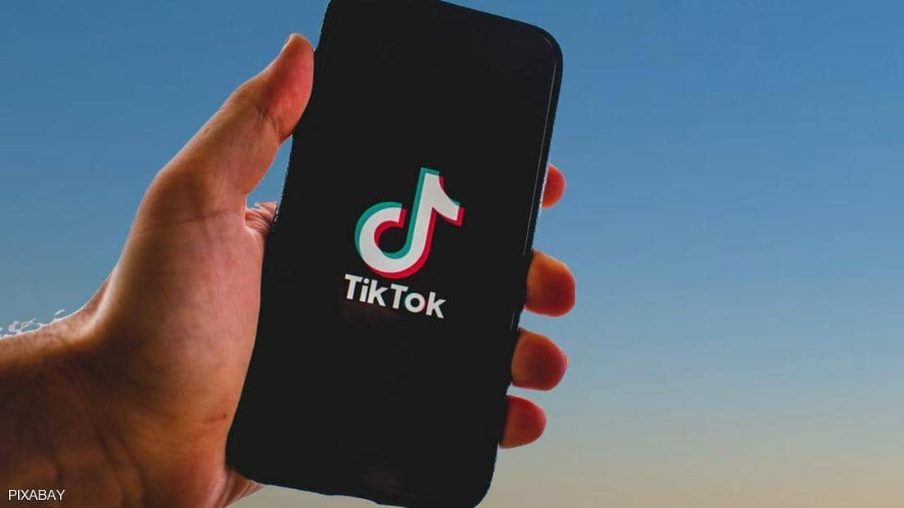

الأثنين
28 من رمضان 1442 هــ 10 مايو 2021
29℃ القاهرة, مصر
بيانات الطالب
| مصر | العالم | تكنولوجيا | رياضة | كاريكاتير |
البيت الأبيض يعيد "تيك توك" للحياة بعد قرار ترامب

ألغى البيت الأبيض، الأربعاء، أوامر تنفيذية تعود إلى عهد الرئيس السابق
دونالد ترامب، كانت تحاول حظر تطبيقي "تيك توك" و"وي تشات"، وسيجري مراجعته الخاصة
بهدف تحديد مخاطر البرامج المرتبطة بالصين على الأمن القومي الأميركي.
ووجه أمر تنفيذي جديد وزارة التجارة الأميركية لإجراء ما يصفه المسؤولون بأنه تحليل
"قائم على الأدلة" للمعاملات التي تتضمن تطبيقات تصنعها الصين أو توفرها أو تتحكم
فيها. ويهتم المسؤولون، بشكل خاص، بالتطبيقات التي تجمع بيانات المستخدمين الشخصية
أو التي لها صلات بالأنشطة العسكرية أو الاستخباراتية الصينية.
وستقدم الوزارة أيضا توصيات بشأن كيفية زيادة حماية المعلومات الصحية والشخصية
للأميركيين، وستتناول مخاطر تطبيقات برامج معينة مرتبطة بالصين أو خصوم آخرين، وفق
مسؤولين كبار بالإدارة.
وتعكس خطوة إدارة الرئيس جو بايدن، القلق المستمر من أن البيانات الشخصية
للأميركيين يمكن أن تنكشف من خلال التطبيقات الشائعة المرتبطة بالصين، المنافس
الاقتصادي والسياسي الرئيسي للولايات المتحدة.
واتخذ كل من البيت الأبيض والكونغرس إجراءات للتعامل مع التقدم التكنولوجي لبكين،
وأقر مجلس الشيوخ الأميركي، الثلاثاء، مشروع قانون يهدف إلى تعزيز إنتاج أشباه
الموصلات في الولايات المتحدة وتطوير الذكاء الاصطناعي وغيرها من التقنيات، في
مواجهة المنافسة الدولية المتزايدة.
واستهدف ترامب "تيك توك" خلال صيف عام 2020 بسلسلة من الطلبات، التي أشارت إلى
مخاوف بشأن البيانات الأميركية التي يجمعها التطبيق من مستخدميه.
ومنعت المحاكم مؤقتا محاولة البيت الأبيض للحظر، وسرعان ما طغت الانتخابات الرئاسية
على معركة "تيك توك".
وتراجعت إدارة بايدن، في وقت سابق من هذا العام، عن محاولات ترامب لحظر تطبيق
الفيديو الشهير "تيك توك"، وطلبت من محكمة تأجيل نزاع قانوني، مع بدء الحكومة
مراجعة أوسع لتهديدات الأمن القومي التي تشكلها شركات التكنولوجيا الصينية.
وقال أحد ملفات المحكمة إن وزارة التجارة الأميركية كانت تراجع ما إذا كانت مزاعم
ترامب بشأن تهديد "تيك توك" للأمن القومي تبرر محاولات حظره من متاجر تطبيقات
الهواتف الذكية وحرمانه من الخدمات الفنية الحيوية.